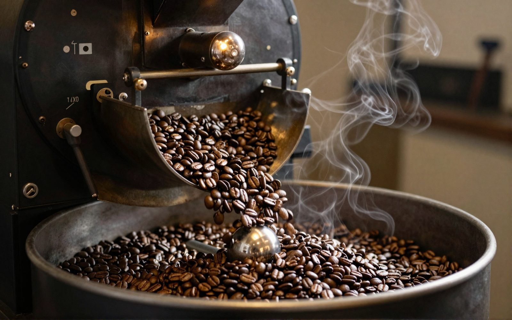
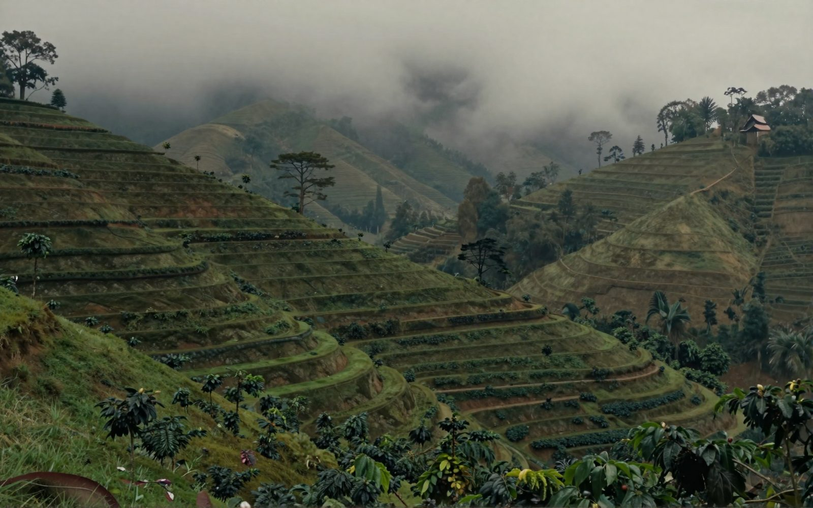
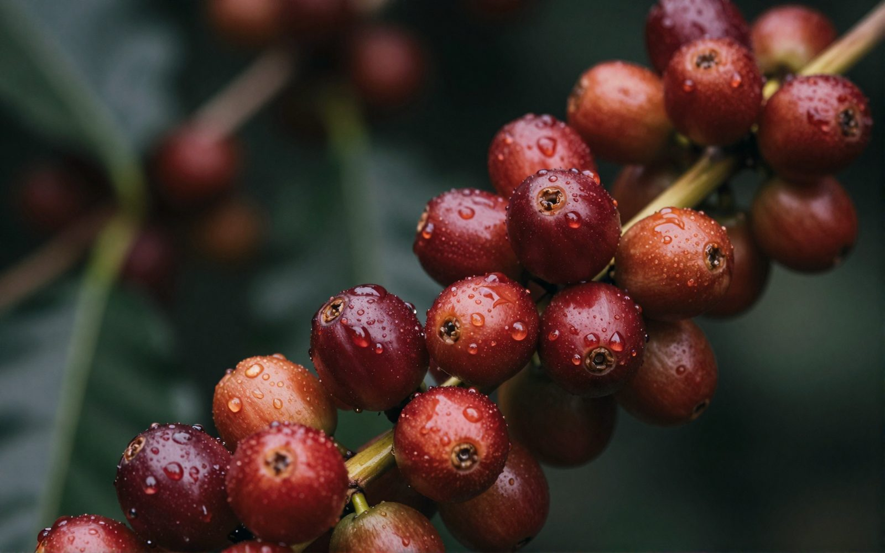
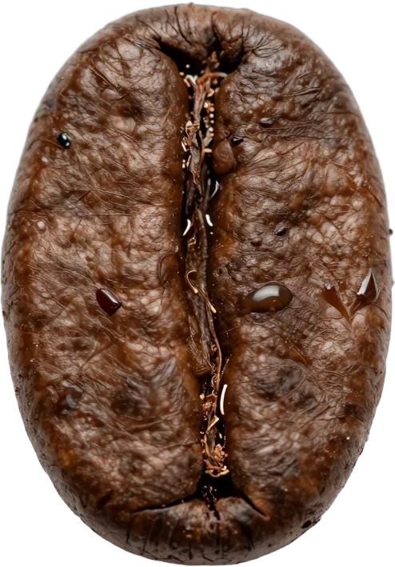
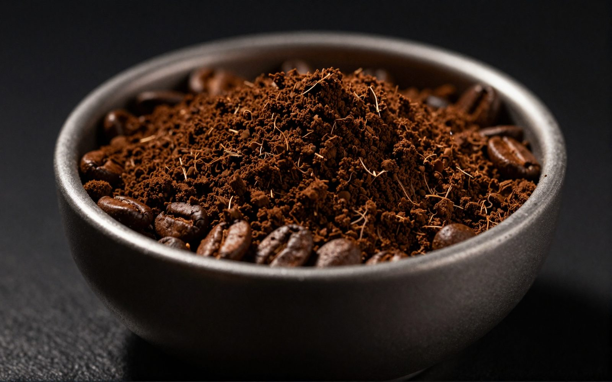
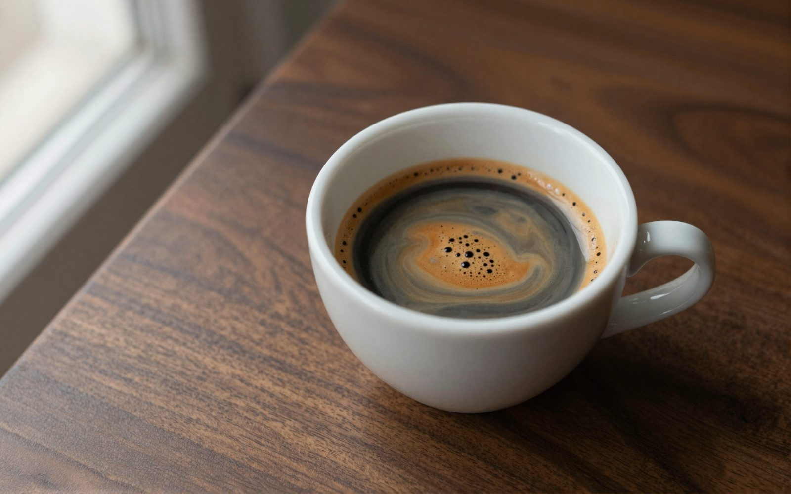
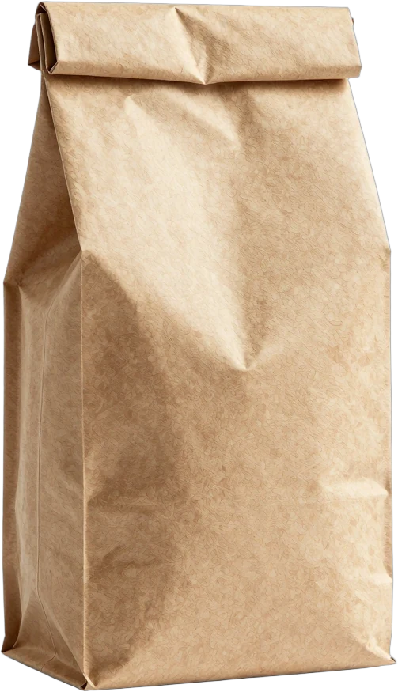
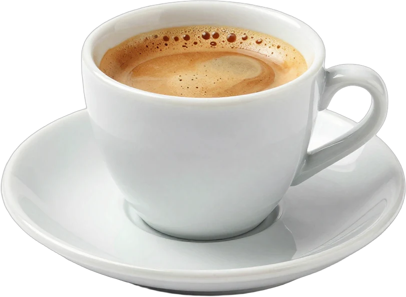

i.
Soğutma
Tamburdan çıkan çekirdek dört dakikada oda sıcaklığına iner; aksi halde kendi ısısıyla kavrulmaya devam eder.

Huila'nın 1.750 metresinde yetişen tek köken arabika. Kaydırın; çekirdeğin yolculuğunu baştan sona izleyin.
Bir fincan kahve yaklaşık yetmiş çekirdekten yapılır. Her biri bir kirazın içinde büyür, elle toplanır, güneşte kurur ve iki yüz yirmi derecede karakterini bulur.

Kirazlar dal dal, elle seçilir. Bir toplayıcı günde 90 kilo kiraz toplar; bu, yaklaşık 20 kilo çekirdek eder.

Çekirdeği ikiye bölen çizgi; içindeki gümüş zar kavrumda incelir.
Isı şekeri karamelleştirir, yağları yüzeye taşır; parlaklık buradan gelir.
Kurutma yataklarında haftalarca dinlenir; nem dengelenmeden kavrulmaz.
Kakao, karamel, fındık. Yeşil çekirdekte yalnızca ot kokusu vardır.
Çekirdek önce suyunu kaybeder ve sarıya döner. Şekerler karamelleşir, 196 °C'de ilk çatlak gelir. Tane'yi orta kavrumda, ikinci çatlaktan önce durduruyoruz.
Kavrumdan sonra çekirdek dinlenir, sonra demlemeden hemen önce öğütülür.

Tamburdan çıkan çekirdek dört dakikada oda sıcaklığına iner; aksi halde kendi ısısıyla kavrulmaya devam eder.

Türk kahvesi için 0,1 mm, filtre için 0,7 mm. Aromanın büyük kısmı öğütümden sonraki ilk dakikalarda uçar.
Aynı çekirdek, farklı suyla farklı konuşur. Oranlar tek fincan içindir.

Kakao, karamel ve fındık. Yumuşak bir asidite, uzun ve tatlı bir bitiş. Yetmiş çekirdeğin hikâyesi, birkaç yudumda.
Paketleri görTek köken, yıkanmış arabika, orta kavrum. Bütün çekirdek; espresso, French press ya da evde öğütüp filtre için.
Fiyat toptancı listesiyle eklenecekOrta-kalın öğütülmüş, fermuarlı ambalajda. Filtre makinesi ve V60 için hazır.
Fiyat toptancı listesiyle eklenecek
